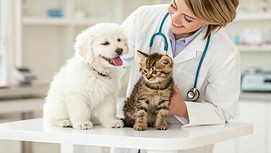
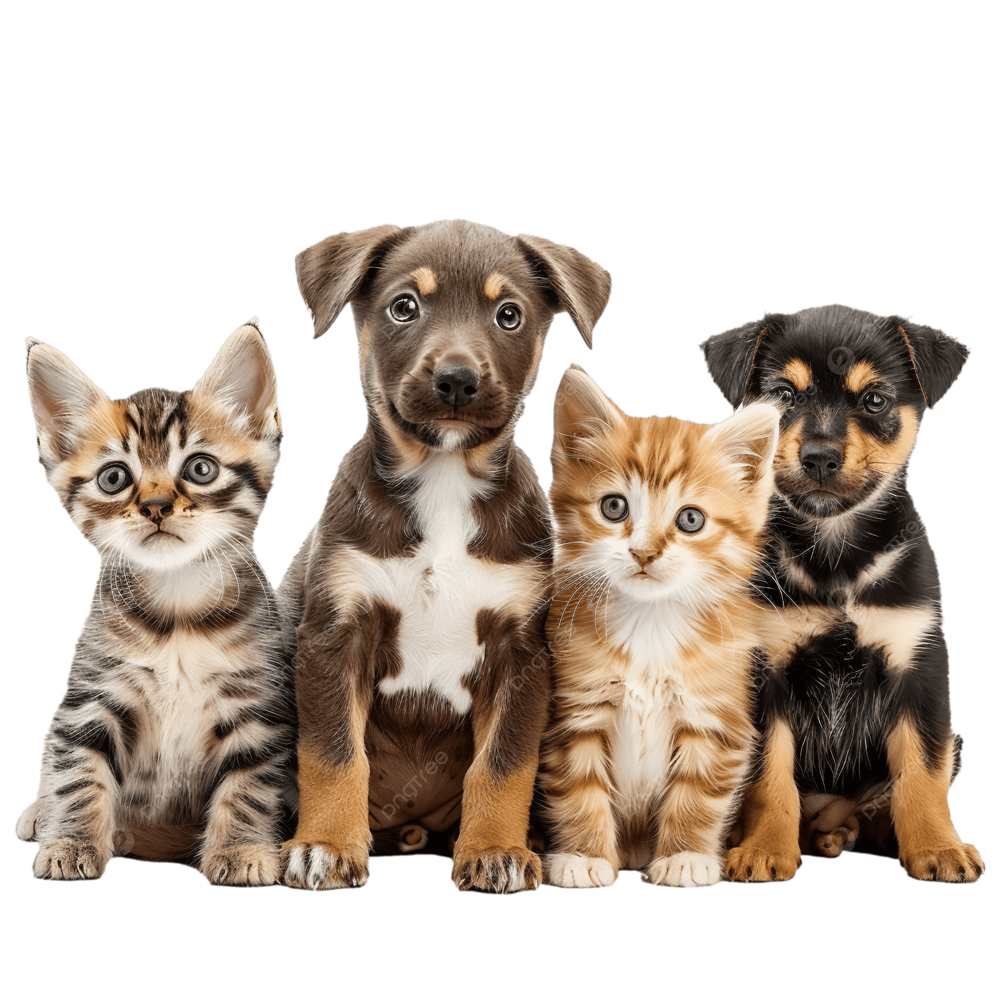

Nossa missão

A Acaochego é uma organização dedicada à proteção e ao bem-estar dos animais. Nosso objetivo é oferecer cuidado, acolhimento e novas oportunidades para animais que precisam de ajuda.
Trabalhamos para incentivar a adoção responsável, combater o abandono e conscientizar a comunidade sobre a importância do respeito e dos cuidados com os animais.
Sobre a Acaochego

A Acaochego é uma organização voltada para a proteção e o cuidado de animais em situação de abandono e vulnerabilidade.
Nosso trabalho busca oferecer acolhimento, cuidados básicos e oportunidades para que esses animais encontrem um novo lar, recebendo carinho, respeito e uma vida digna.
Projetos
Desenvolvemos projetos voltados à proteção animal, incluindo campanhas de adoção, arrecadação de doações, ações de voluntariado e iniciativas de conscientização.
Conheça nossos projetosParticipe
Você também pode fazer parte dessa causa. É possível contribuir realizando doações, participando como voluntário ou ajudando na divulgação das nossas ações.
Toda ajuda pode fazer a diferença na vida de um animal que precisa de cuidado e acolhimento.
Cadastre-se Quero ajudar